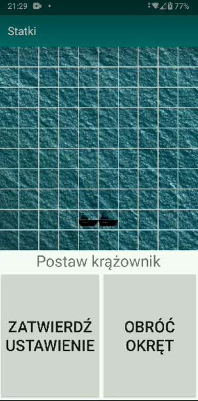
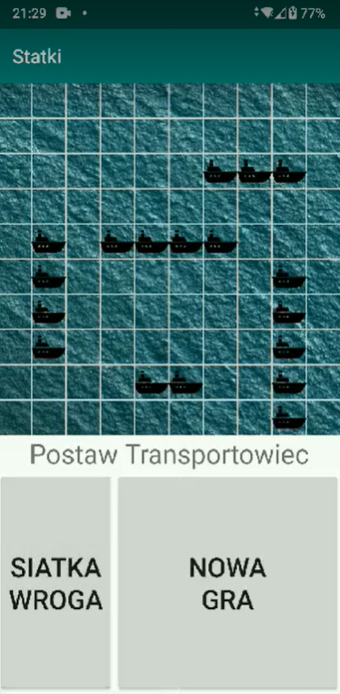
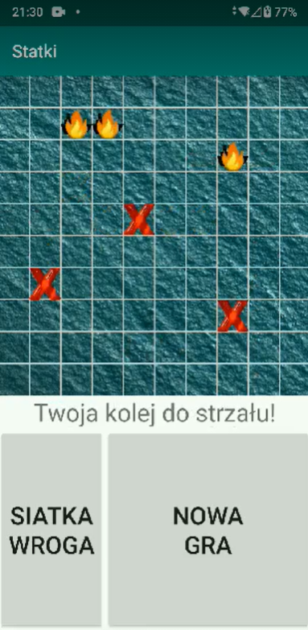
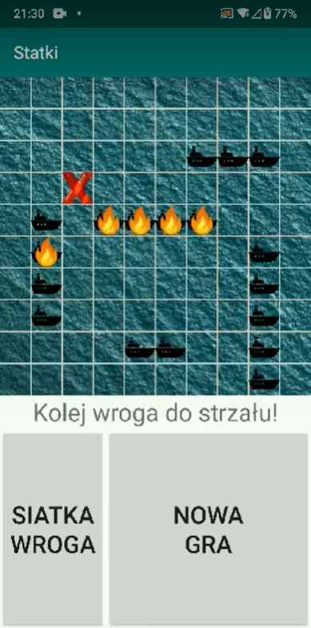

Umieszczenie swoich statków na planszy i zniszczenie wszystkich statków przed wrogiem. Wygrywa osoba, która zatopi wszystkie wrogie statki jako pierwsza.
1.Klikamy na plansze po czym pojawia nam się okręt. Po rozmieszczeniu klikamy “ZATWIERDŹ USTAWIENIE”. Mamy do ustawienia 5 okrętów o długości 2, 3, 4, 4 oraz 5
 Mamy do dyspozycji przycisk “OBRÓĆ OKRĘT”, który ustawia nasz statek w pozycji pionowej. Gdy wszystkie statki zostaną rozmieszczone klikamy “NOWA GRA”.
2. Rozpoczynając grę ukazuje nam się plansza, posłuży nam do strzelania w wrogie statki, które nie są widoczne dla nas. Po naszym strzale następuję kolej naszego wroga. Gdy uda nam się trafić ukazuje nam się wrogi płonący statek a gdy spudłujemy pole zastąpi czerwony znak “X”. Wrogie ruchy będziemy widzieli na swojej planszy na której umieściliśmy statki.
 Zakończenie następuje wraz z zatopieniem wszystkich statków gracza. Wygrana zostaje przyznana graczowi, który jako pierwszy zniszczył wszystkie statki wroga.